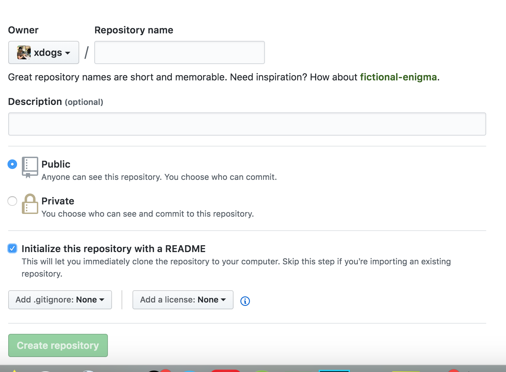

Hexo介绍
Hexo是基于NodeJs的静态博客框架，简单、轻量，其生成的静态网页可以托管在Github和Heroku上。
- 超快速度：Node.js 所带来的超快生成速度，让上百个页面在几秒内瞬间完成渲染。
- 支持MarkDown：Hexo 支持 GitHub Flavored Markdown 的所有功能，甚至可以整合 Octopress 的大多数插件。
- 一键部署：只需一条指令即可部署到 GitHub Pages, Heroku 或其他网站。
- 丰富的插件：Hexo 拥有强大的插件系统，安装插件可以让 Hexo 支持 Jade, CoffeeScript。
环境准备
安装node.js
去nodejs官网下载对应系统的安装包，按提示安装。
检验安装成功：1
$ node -v
安装hexo
1 | $ npm install hexo-cli -g |
注意：Mac系统，则需要
1 | $ sudo npm install hexo-cli -g |
利用Hexo搭建一个博客
创建博客目录 1
2
3$ hexo init blog
$ cd blog
$ npm install
生成静态页面1
2$ hexo clean
$ hexo g
运行1
$ hexo s
然后打开浏览器，输入地址 localhost:4000 即可看到效果
发表第一篇文章
命令行方式
1 | $ hexo new HelloWorld |
此时会在source/_posts目录下生成HelloWorld.md文件，输入些许内容，然后保存.
生成，看看效果1
2
3$ hexo clean
$ hexo g
$ hexo s
然后按照提示 访问 localhost:4000 即可
如果出现端口被占用的提示 则1
$ hexo s -p 4001
直接方式
在 source/_posts/下新建一个.md文件也可
配置
网站的设置大部分都在_config.yml文件中，详细配置可以查看官方文档
***注意：进行配置时，需要在冒号:后加一个英文空格
1 | title: Droidlover |
换一个好看的主题
Hexo 中有很多主题，可以在官网查看。 这里我推荐hexo-theme-next，下面列举更换主题的一般套路：
下载主题资源1
$ git clone https://github.com/iissnan/hexo-theme-next themes/next
应用下载的主题
在网站配置文件_config.yml中，配置theme1
theme: next
next是主题名称，具体的可查看主题的文档
主题其他配置
可在/theme/{theme}/_config.yml 主题的配置文件下进行主题的配置。
接下来，可以执行万能的调试命令看看效果1
2
3$ hexo clean
$ hexo g
$ hexo s
部署到Github
有个github账号
创建一个xxx.github.io的public仓库

如果您的账户名是xdogs,则需要创建一个xdogs.github.io的public仓库.
安装 hexo-deployer-git1
$ npm install hexo-deployer-git --save
网站配置git
在网站的_config.yml中配置deploy1
2
3
4deploy:
type: git
repo: <repository url>
branch: [branch]
branch为分支，默认为master,可以不配置 repo为仓库地址，在github上新建仓库后，可复制此地址
部署1
$ hexo d
贴标签，方便搜索
确认两点
确认站点配置文件有
1
tag_dir: tags
确认主题配置文件有
1
tags: tags
新建tags页面1
$ hexo new page tags
此时会在source/下生成tags/index.md文件
文章中插入图片
在写文章时，常常有配图说明的需求。Hexo有多种图片插入方式，可以将图片存放在本地引用或者将图片放在CDN上引用。
绝对路径
当Hexo项目中只用到少量图片时，可以将图片统一放在source/images文件夹中，通过markdown语法访问它们。1

图片既可以在首页内容中访问到，也可以在文章正文中访问到。
相对路径
图片除了可以放在统一的images文件夹中，还可以放在文章自己的目录中。文章的目录可以通过配置_config.yml来生成。1
post_asset_folder: true
将_onfig.yml文件中的配置项post_asset_folder设为true后，执行命令$ hexo new post_name，在source/_posts中会生成文章post_name.md和同名文件夹post_name。将图片资源放在post_name中，文章就可以使用相对路径引用图片资源了。1

上述是markdown的引用方式，图片只能在文章中显示，但无法在首页中正常显示。
如果希望图片在文章和首页中同时显示，可以使用标签插件语法。1
{% asset_img image.jpg This is an image %}
添加评论功能
使用Disqus，由于众所周知的原因，需要FQ才能正常使用